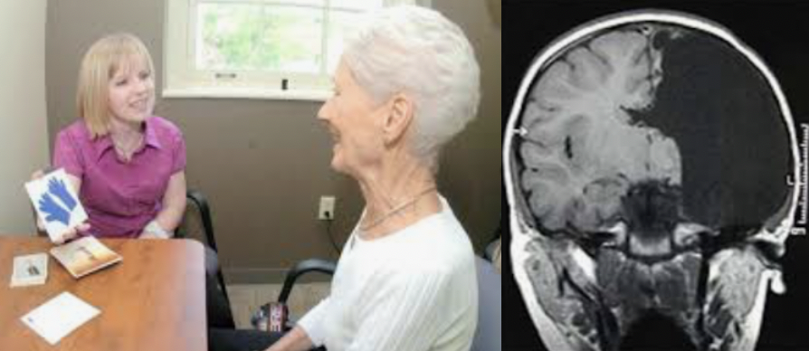

Neuroplasticity is the term used to describe the plasticity of the brain – the ability to create new pathways and strengthen them through practice. Neuroplasticity is one of the most useful things that humans are capable of, aside from our genetic talents, which we have no say over, neuroplasticity encompasses the process of everything else that we learn. Because of this, its benefit to people is second-to-none – it’s how we learned to ride a bike, how we learn to speak and write, how we learn to cook and remember our favourite recipes without having to even think about it. You name it – most of the things we do as humans are possible only because of the brains ability to be more efficient and create pathways through practice.
Understanding neuroplasticity can be extremely beneficial to the learning process. The awareness that your brain is capable of change allows for a much more positive attitude and increased resilience when encountering difficulty during learning. This is because you are aware that while you might not know how to do it now, if you practice the process enough, it will get easier – it’s a physiological fact. You can engage with neuroplasticity during learning by thinking about it whenever you are struggling, as this will help you to push through over and over again until you can do it.
Three examples for increasing neuroplasticity are getting enough sleep, reducing stress, and learning and exercising. Sleep is the brains chance to gather up all the information that you experience during the day, and solidifying this is into neural pathways. Because of this, getting enough sleep is super important, especially when actively learning new skills. When the brain/body is stressed, your body puts more resources into the fight or flight responses – increasing blood flow to the muscles, increasing adrenaline, lowering the immune system, and wiring the brain to be thinking in the here and now, not the learning process. While this is useful if you’re in imminent danger, for example being chased by a Tiger, it’s harmful to all aspects of daily life, including learning new things – reduce stress and your brain will thank you. Constantly learning new things and being active are also key as it keeps good blood flow to the brain and causes lots of neural firing, preventing the ‘trimming down’ of neurons.
An amazing resource that demonstrates just how malleable the brain can be was the recovery of a woman called Christina Santhouse. She suffered from Rasmussen’s Encephalitis, which caused 150 seizures a day. At 8 years old she had the entire right hemisphere of her brain removed, as it was the only way to cure the disease. This paralysed her left side but she was able to learn how to walk and talk again, and now, at 32 years old, she has a Masters degree in speech pathology, she has two kids, she owns a house, and the only traits she still has from having only half a brain is a slight limp, and issues controlling her left arm. The left side of her brain was able to almost fully compensate for the loss of its other half, which just shows the incredible ability of the brain to re-structure and re-wire.
Placeholder paragraph
placeholder paragraph
placeholder paragraph